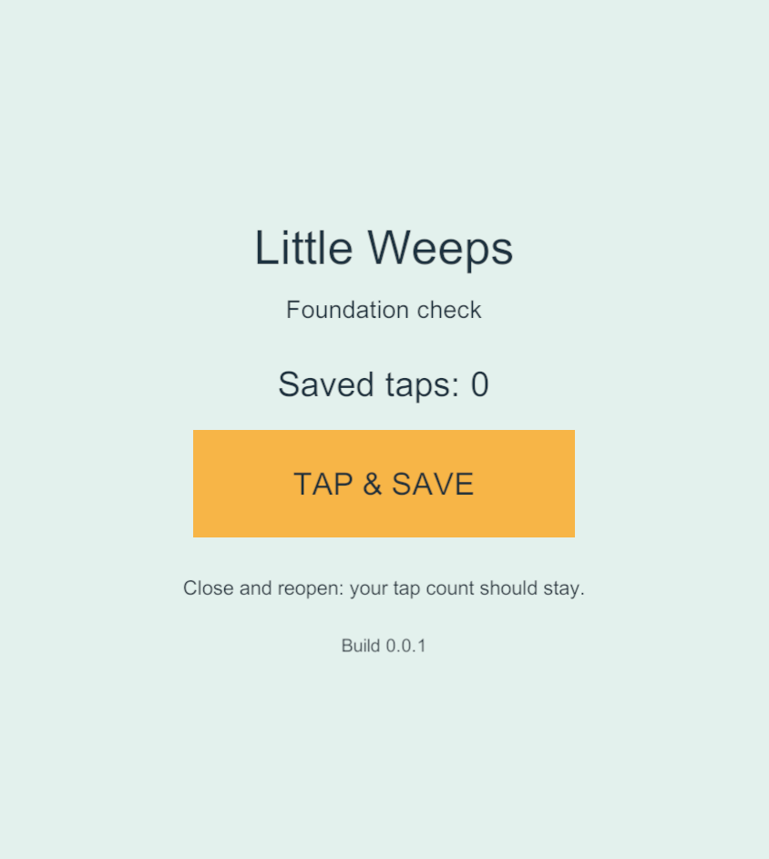
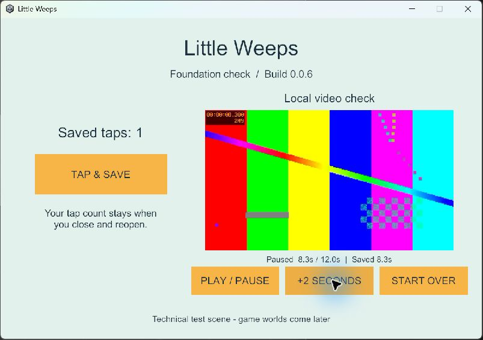

G1 — project and device foundation
Historical implementation record — current scope changed September 25. PC/VPS is the sole shared authority; clients continue private solo if disconnected and load server state on rejoin. G4/AUTO-02 device hosting and automatic offline imports are removed. The dated results below remain evidence, but their old “next”, “required” and device-version statements are not the active plan. Use current decisions, the build guide and the current return checklist.
Current-status pointer, September 24: this file retains dated implementation history. Use the main plan audit for the consolidated device/build ledger, all feature statuses and next task; earlier “next” and “unavailable” statements below belong to their recorded stage.
Started 23 September 2026. In progress. The Samsung foundation launch, input, media, restart and signed-update checks passed; the remaining G1 device/recovery gates are still open.
24 September device follow-up: solo garden 56 now runs on both iPads. The iPad 9 update and physical checks retained the earlier foundation preferences; the iPad 7 first install/play/restart has successful native launch and exact save retention, with a separate CoreDevice installed-app enumeration error still open. These garden results do not close older-iPad media coverage, measured performance, recovery, renewal or the whole G1 gate.
Earlier foundation iPad task completed: signed 16 → 20 installed and launched on iPad 9, retaining 1,019 taps, the same profile and the current 10.3-second bookmark. The user confirmed visible resume and start-over/play/pause/skip controls; the subsequent saved position is 8.9 seconds. Completed iPad evidence.
Latest G1 Windows task completed: paused-video stability, TV-01 / FAMILY-01. Reproduced a no-play bookmark rewrite in build 21 and fixed it in build 22. Sixty paused reopenings, four seek interruptions, process relaunch and the 19 → 22 save/update regression passed. Foundation preview uses 22. Mobile retesting and remaining G1 gates stay open. Continued Windows-only work has since produced a separate provisional G2 solo garden prototype, Windows 37 and emulator 30, without marking either phase passed.
Previous bounded task: Windows signing-refresh qualification, supporting FAMILY-01 / TV-01. Manual USB refresh of iPhone build 20 succeeded with the original app ID; Sideloadly shows Done / 100%, and recurring enrollment remains enabled with a new success timestamp. The app reopens and retains 1 tap. Its bookmark displays 11.1s, versus the earlier rounded 10.8s report; exact bookmark retention across signing lacks an immediate pre-refresh snapshot. A subsequent controlled relaunch passed: same profile/count and a one-frame bookmark difference within the existing tolerance. A new matching installed profile expires 1 October 04:25:16 UTC. Wireless detection still fails after all recorded repairs and restarts; a future unattended cycle and both iPads' Windows enrollment remain unverified. Next: qualify each iPad when available and capture exact saves around the next signing cycle. The older iPad 7 remains unavailable/unqualified; G1 stays active.
Platform work (23 September): iPads are primary; Android is secondary. Saved iPad/iOS, Android and Windows Server profiles now join the Windows client profile. Fresh iOS 16, family-signed Android 17, server 18 and Windows 19 builds passed; server lifecycle and Windows 9 → 19 save/video/update checks passed. Android's strict 16 KB static check still flags the same unresolved issue. Profile task and evidence. Remaining device work includes iPad Windows enrollment, unattended renewal observation and qualifying older iPad 7 through the Mac when available. The Samsung install remains family-signed 15 with human-confirmed touch/audio and observed 14 → 15 save retention. Android phone evidence. Independent backup/native ARM64 16 KB gates remain open. Provisional Windows-only G2 work has since started; see the garden implementation record. G1 remains open.
Boundary and tools
- Root:
C:\Users\sephi\Desktop\Little weeps game. - Unity project target:
Unity/FamilyPlaysetunder this root. - Old
Meeps gameremains unrelated. Its connector was read only to diagnose the reported error; no old game assets or settings are imported. - Windows: Unity 6000.3.6f1 and 6000.5.0f1 already installed. Side-by-side 6000.3.24f1 is now installed and registered in Hub; editor executable reports revision 4e7b9b5b6244. It is not yet device-qualified.
- Candidate 6000.3.24f1 / revision 4e7b9b5b6244 verified against the official release page and release API. Windows exports the Xcode project; the Mac only needs Xcode for the current route. If Unity is later used on the Mac, use the same editor patch. Bloom stays disabled during this foundation work.
- Blender 5.0.1, native MCP protocol 9 / add-on 1.7 responded successfully on 23 September.
- Codex CLI 0.155.0-alpha.16.3 exists under the desktop app's versioned bin directory. That directory is absent from the normal user PATH, explaining the shortcut error. The new resolver locates it directly on each launch. The launcher passed a live Blender-only reconnect with a normal Windows user/machine PATH, and PowerShell syntax validation passed. Both desktop shortcuts now point here.
- Git 2.53.0.windows.1 and Git LFS 3.7.1 available.
- Samsung SM-S948U1: Android 16 / API 36, 4,096-byte pages, active user 0. Family-signed 0.0.15 is installed; exact APK bytes, corrected layout, touch/audio, video, restart and 14 → 15 save retention passed. This does not qualify native 16 KB devices or long sessions.
- A2602 iPad 9: connected by cable, paired and Developer Mode enabled. Live device inventory reports iPadOS 18.6.2 (22G100); this supersedes the earlier reported OS pairing. Signed foundation 0.0.20 is installed. Physical touch/video/audio, 16 → 20 tap/profile/bookmark retention, visible resume and start-over/skip controls passed. A2197 iPad 7 is unavailable for now. The A2484 iPhone was subsequently identified by iTunes as iPhone 13 Pro Max/iOS 26.6.1 and received build 20 through Sideloadly; manual USB refresh and launch passed, retaining 1 tap. The latest bookmark is 11.1s and controlled relaunch passed; the earlier 10.8s comparison across signing remains qualified in the refresh record.
- Mac SSH authenticated successfully after correcting authorized_keys from a directory to a file. Live inventory: macOS 26.3.1 (25D2128), arm64, Xcode 26.6 (17F113), developer directory /Applications/Xcode.app/Contents/Developer, about 247 GiB free. No Unity Hub editor directory on Mac.
Exit checks
| Check | Result |
|---|---|
| Correct isolated root | Verified |
| Local Git baseline and source policy | Baseline committed locally as 674c1f6; version 0.0.2 build settings recorded as d021213. Ignore/LFS rules are present. No external backup configured. |
| New tool launcher; exact Unity project verified | Live full shortcut passed from normal Windows PATH. Blender responded; Unity MCP reported the new root, Unity 6000.3.24f1 and ready-for-tools. |
| Matching editor, small package lock and saved profiles | 6000.3.24f1 and package lock exist. URP 17.3.0, Input System 1.20.0, UGUI 2.0.0, Test Framework 1.6.0, editor MCP 9.7.3; server-profile creation added Dedicated Server 2.0.2. All four saved profiles produced fresh non-development artifacts. Device qualification is separate. |
| Touch/save scene and local-video probe | Native Windows mouse input, saved taps, profile retention, local H.264/AAC decoding, play/pause/seek/restart and bookmark recovery passed. Samsung touch/audio and video/save/update checks pass. iPad 9 touch/video/audio, restart resume, 16 → 20 bookmark retention and physical start-over/skip pass; older-iPad qualification remains pending. |
| Android release launch and update retaining seed data | Passed for this Samsung 4 KB configuration: non-development family-signed 14 → 15 retained 3 taps and the 6.2-second bookmark. Human touch/audio confirmed; local recovery key signed the update. Independent backup/native 16 KB/long-session tests remain separate. |
| Android tools and APK | Matching module/toolchain work. Fresh profile-based family-signed 17 passes build, identity/signature/ABI/SDK and ZIP/ELF LOAD alignment. Six raw RELRO-end flags remain. The earlier build-11 geometry diagnostic found no declared writable overlap; its 16 KB emulator smoke passed under ARM64 translation. Samsung 4 KB checks passed on 15; native ARM64 16 KB qualification remains pending. |
| Native launch on each iPad via Mac | Mac Release 0.0.20 passed signing, in-place update and launch on A2602; physical touch/video/audio, bookmark retention and controls passed. A2197 is currently unavailable and remains untested. |
| Free provisioning renewal observation started | Manual USB signing refresh passed on iPhone build 20. Launch and 1 tap retained; current bookmark is 11.1s. Controlled relaunch kept the same profile/count with a one-frame bookmark difference within tolerance. Exact bookmark retention across signing remains unqualified because the original 10.8s report was not an immediate exact baseline. A new matching installed profile expires 1 October 04:25:16 UTC; recurring enrollment and Windows startup are verified. Wi-Fi discovery, unattended renewal and each iPad's Windows enrollment remain open. Evidence and next checks. |
| Build/test scripts and source/artifact evidence | Saved-profile iOS 16, Android 17, server 18 and Windows 19 have build/source/artifact manifests. Windows 9 → 19 and server 18 lifecycle passed; Android 14 → 15 device update passed earlier. iPad 1 → 16 retained taps/profile; 16 → 20 retained the existing video bookmark and passed physical controls. |
Local Git history is not an off-device backup. Keep private media and signing credentials outside this repository; do not reuse another app's keys. Establish and verify an external recovery destination before family distribution.
Setup recovery evidence
The first Hub download failed with socket hang up; its retry left the editor paused. The completed portion was preserved and resumed from Unity's official download URL in ignored LocalData. The completed installer matched Unity's published MD5, had a valid Unity Technologies SF Authenticode signature, and was installed side-by-side using Unity's documented silent installer. Other editors were not replaced. Verification is in LocalData/Logs/unity-installer-verification.json.
Automatic approval review rejected a combined custom template-extraction/module-install command with only blocked by policy. It did not run. The narrower standard Unity -createProject / -cloneFromTemplate command succeeded using the bundled Universal 2D 6.1.6 template in the new project path. The iOS module was installed from Unity's verified, signed installer; successful iOS export confirms it works. Android and Windows Server modules were subsequently installed and produced the builds recorded below. Windows client/server currently use Mono; Windows client IL2CPP is not qualified.
The Mac initially rejected authentication because ~/.ssh/authorized_keys was a directory. The user preserved that directory as a backup and created the required key file. Remote inventory succeeds through Tools/Check-Mac.ps1. The Windows SSH key and Mac signing key remain outside source control. Xcode now recognizes a valid Apple Development signing identity after its intermediate certificate became available; no custom trust override was applied.
Sources: Unity 6000.3.24f1, Hub CLI reference, Codex MCP, plus the local installed executables and live Blender/ADB responses recorded above.
Update: standard Unity project creation and FoundationSetup.Create both finished successfully with return code 0. The initial touch/save fixture and core/runtime assembly boundary compile and run. A programmatically invoked button event saved count 1; stopping and re-entering Play Mode restored count 1 and its profile identity. This proves the Editor fixture only, not physical touch or a native in-place update. It uses a small PlayerPrefs smoke-test value, not the final multiplayer world-save system.

Build evidence — 23 September 2026
- Windows standalone 0.0.1: succeeded via Unity MCP, non-development Mono build, 0 errors / 1 reported warning, about 96 MB. Output:
Unity/FamilyPlayset/Builds/Windows/G1-0.0.1/LittleWeeps.exe. Native launch has not been checked. - iOS 0.0.1 export: succeeded, IL2CPP, device SDK, non-development build. Summary:
Builds/iOS/G1-0.0.1/build-summary.json; Unity reported 0 errors / 0 build-summary warnings. Import logs contain package shader precision warnings, so the full log is retained in ignoredLocalData/Logs. - Xcode export archive SHA-256 matched on Windows and Mac:
34e9b942083a3adfd03e0466423f264b53f535777d4868c247bf419bc7b2d830. - iOS 0.0.2 export also passed with 0 reported errors/warnings, preparing the in-place update check. Its archive SHA-256 matched on both machines:
fb5e5fb731912a15ba4912a994a093dd3c0c2c439277ede7d9f3853365c84d6d. It is extracted in the separate MacBuilds/G1-0.0.2directory; native compilation of this version has not started. - Mac destination:
/Users/nayster/Developer/LittleWeeps/Builds/G1-0.0.1/Xcode. Only the export and build summary were transferred; no Windows Library or unrelated project was copied. - Mac build: Release / Unity-iPhone scheme / automatic Personal Team signing. Native compilation completed, but the first SSH build failed at signing with
errSecInternalComponent; a keychain query also returnedUser interaction is not allowed. A local Mac Terminal retry usesTools/Build-iOS-Mac.shand prompts for keychain access only on the Mac. No password is stored or sent to Windows. Awaiting that build's result. Logs and DerivedData stay under/Users/nayster/Developer/LittleWeeps.
Native mobile launches, physical touch, remaining platform profiles, mobile video/update checks and free-provisioning renewal observation remain G1 work. Windows-only evidence below does not satisfy these device gates. A successful initial Personal Team install does not establish automatic renewal.
Signing references: Apple guidance for errSecInternalComponent, Apple signing intermediate certificates. The initial compile also reported placeholder app-icon and generated build-script warnings; a finished app icon is not part of this fixture.
Reconnect regression and immediate next action
An additional cold-start check exposed MCP 9.7.3 leaving its cached transport session as pending even while live project tools worked. The helper now acknowledges transport state, and the launcher additionally uses the project-checked MCP client to require a live project-info response matching the new root. Both a reconnect with apps open and a full Unity close/reopen passed from the normal Windows PATH. No Unity console errors were returned after compilation. The editor-only change occurred after the two iOS exports and does not change their player content.
Earlier Mac deferral ended when the user reported completing the local password step. Finish-iPad-Build.command returned build exit 0, and codesign --verify --deep --strict passed. The signed 0.0.1 app was installed and subsequently launched after the user allowed developer trust. See the current iPad evidence below. Passwords were not requested or transferred to Windows.
Windows-only continuation
The saved Windows Foundation Build Profile was created through Unity's supported UI and stored at Assets/BuildProfiles/Windows Foundation.asset. Native builds use this explicit profile, not whichever platform was last selected. The fixture now includes a generated 12-second H.264 Constrained Baseline / AAC local clip, 640×360 at 30 FPS, plus play/pause, skip and restart controls. No external video or network service is needed. Creation command: Tools/Create-VideoProbe.ps1.
Opt-in verification uses a new GUID namespace for each run, separate from normal foundation.* preferences. Tools/Test-WindowsFoundation.ps1 checks seeded button events, an unchanged profile/tap count after process restart, decoded video frames, pause, seeking, leave/reopen bookmarks, and a different app build using the same saved data. This remains a small PlayerPrefs fixture, not the final recoverable multiplayer save system or complete TV library.
Observed results
- Fresh Windows builds 0.0.5 and 0.0.6 succeeded with the saved profile, non-development Mono configuration, zero reported build errors/warnings. Each has a build summary, source manifest and artifact manifest under
Builds/Windows/G1-0.0.N. - The first native check on 0.0.3 caught a video resume defect. A freshly prepared Windows decoder could finish seeking before it displayed the saved frame. The controller now waits for the requested frame, prevents premature checkpoint writes and returns paused. The fix passed in 0.0.5 and 0.0.6.
- Automated run
f8cce936d3204f5c964aaa29a84338ff: seed on 0.0.5, restart 0.0.5, then launch 0.0.6. All three passed, preserving the same profile, 3 taps and a 4.0-second bookmark. Each phase decoded at least 15 video frames. Records: seed, restart, new version. Raw logs remain in ignoredLocalData/Verification. - Real Windows mouse checks on 0.0.6: tap 0 → 1, video play and pause at 6.3 seconds, skip to 8.3 seconds. Force-terminated only this test app, reopened it, and visually verified 1 tap and the same paused 8.3-second bookmark. Start Over then returned playback and its bookmark to 0.0 seconds.
- Native preview visually checked at the actual Windows window size. Unity was reopened and its exact new project connection verified afterward. No Mac, iPad or Android-device actions occurred during this Windows continuation.
- Known limit: the generated diagnostic clip produces a Windows Media Foundation color-primaries warning; it decodes and passes timing checks, but final imported media will need explicit color metadata. The automated hidden-player screenshot is best effort; the image below is the separate, visible native check.

The Windows update check launches two fresh versions against the same application preferences; it is not an Android APK or iPad installation test. This evidence does not qualify older iPad performance, final save-file corruption recovery, multiplayer, audio quality, the full TV library or the complete game.
Repeat the Windows workflow
Double-click Play-Foundation.cmd at the game root to open the last verified Windows preview (now 0.0.9). It checks artifact hashes before launching and avoids opening duplicate copies. The preview is a technical fixture with a generated test clip.
With Unity saved and closed, build with Tools/Build-Foundation.ps1 -Target Windows -BuildNumber N using unused numbers, then run Tools/Test-WindowsFoundation.ps1 -FirstBuild N -UpdatedBuild M. Build failure or test failure stops the flow; no old artifact is substituted. Ordinary preview data and automated test namespaces are preserved separately.
Implementation references: Unity Build Profiles API, video preparation, frame-ready callbacks. Runtime evidence above, rather than documentation alone, establishes what passed on Windows.
Android/server build preparation and Windows regression
See the platform setup record for implemented commands, server scene, actual results, supporting sources and the continuation sequence. Windows 0.0.9 built with zero reported errors/warnings, and run b18b274af9c4413da4fd162155fc692b passed seed/restart/update/video checks from 0.0.6 → 0.0.9. Android 0.0.11 compiled successfully after fixing tool-path restoration. Windows Server 0.0.12 now also builds and passes its native lifecycle test; no networking feature is implemented.
First native iPad installation
On 23 September, after the user completed the local Mac keychain step, the existing 0.0.1 export produced a signed Release app. Build log: /Users/nayster/Developer/LittleWeeps/Logs/g1-ios-0.0.1-local-20260923-212019.log; Xcode exit 0 and strict/deep signature verification passed. This is the earlier tap/save fixture, not the newer Windows video fixture.
The app was absent before installation. devicectl then installed com.littleweeps.familyplayset and independently reported version 0.0.1 / build 1 on the connected iPad 9 running iPadOS 18.6.2. Developer Mode is enabled. The subsequent launch failed with CoreDevice 10002 / FBS Security, naming invalid signature, inadequate entitlements or a profile not explicitly trusted. Because local signature verification passed, the next check is the device's developer-trust setting; this is not yet a proven trust-only diagnosis. The user was asked to check Settings → General → VPN & Device Management and open Little Weeps after trusting their developer profile. No app was uninstalled and no device data was cleared.
Sanitized evidence: first installation. Raw install, installed-app and failed-launch JSON remain in the game's Mac Logs directory. The actual embedded provisioning profile was created 23 September 2026 at 21:15:06 UTC and expires 30 September at 21:15:06 UTC. Automatic renewal is not configured or proven by this installation.
Developer trust resolved: the user allowed the developer profile under Settings → General → VPN & Device Management. A fresh devicectl device process launch returned success and process ID 675. Launch evidence. This verifies launch only; the user was asked to tap the counter and report its value.
Next acceptance steps: confirm physical taps and saved count; relaunch to check persistence; finish local signing of 0.0.2, install it over the app and confirm the same saved count remains. Device UI and saved values must be observed before claiming these pass. Apple developer-trust guidance, running on a device.
Update preparation: the already transferred 0.0.2 export was compiled remotely while waiting for the device trust check. Native compilation reached signing, but UnityFramework.framework signing returned errSecInternalComponent, Xcode exit 65. Log: /Users/nayster/Developer/LittleWeeps/Logs/g1-ios-0.0.2-20260923-223023.log. This update was not installed or claimed as signed. Use the proven local Mac Terminal signing route for build 2 when continuing; completing the earlier build-1 password prompt did not establish that remote signing works for later builds. Do not weaken keychain protections to bypass this.
First Android build and remaining server installation
Android 0.0.10 compiled but the wrapper failed afterward: restoring the missing bundled JDK as a custom path raised an exception. It is preserved as incomplete build evidence. AndroidFoundationTools now restores a bundled default with Unity's documented null setter. Tools/Test-AndroidToolPaths.ps1 exercised both bundled-default and custom-path restoration inside the actual editor and exited 0. Fresh build 0.0.11 then completed with Unity exit 0, zero build-summary errors/warnings, and full manifests. Build, tool-path regression.
The 35,698,953-byte APK is non-development IL2CPP/ARM64, minimum API 26, target API 36, signed with the default Android Debug certificate for this build-only probe. It has not been installed on a phone and is not a family release. Actual inspection verified its identity/signature and 16 KB ZIP/ELF load alignment. The extra check from Google's current page-size guidance flagged non-aligned RELRO ends in six libraries. Inspection and exact names. Keep this as an unresolved static finding until the check and runtime behavior are validated in a 16 KB environment; it is not an observed crash on the family's phone. Do not weaken the check or replace the pinned editor/NDK without investigating the supported route.
The earlier Windows Server installer attempt returned “The operation was canceled by the user” at administrator approval. After the user reported approving the later prompt, fresh inspection verified the server module under the exact 6000.3.24f1 editor. No automatic approval-review rejection occurred. Installation is complete and the build below proves the module works.
First native dedicated-server verification
On 23 September local time (24 September UTC), Windows Server 0.0.12 built with Unity exit 0 and zero build-summary errors/warnings. It is a non-development Windows 64-bit Dedicated Server / Mono build of ServerBootstrap.unity, with full source/artifact manifests under Builds/WindowsServer/G1-0.0.12. Log: LocalData/Logs/build-WindowsServer-12-20260924-003721.log.
Tools/Test-ServerFoundation.ps1 -BuildNumber 12 verified artifact hashes, started its own headless process, observed three heartbeats, requested cooperative shutdown and verified exit 0. Run 5123c88f5b5449ad91cee48d248ac63d records the expected build, null graphics, zero cameras and networkingImplemented: false in all phases. Module, build, lifecycle result, ready, heartbeat, stopped.
This proves the dedicated process foundation only. It opens no game network listener, configures no firewall or automatic service, and does not yet host family players. The tested process has stopped. Mobile qualification, saved platform profiles, signing/renewal and all shared-world requirements remain ahead; G1 is still in progress.
Android 16 KB investigation and isolated emulator smoke
Bounded G1 work for FAMILY-01/TV-01: source-backed investigation and exact evidence. A separate ELF diagnostic inspected all seven libraries in the hash-verified 0.0.11 APK and found no declared writable bytes outside RELRO inside the page-rounded protection ranges. Eight synthetic regression tests passed. The original six raw-end flags and strict artifact gate are unchanged; pinned Unity/NDK and the APK are unchanged.
The exact APK installed and rendered on the new game-owned Android 15 16 KB emulator. Three injected taps saved, the local clip played/paused/skipped, and force-stop/reopen restored 3 taps and the paused 6.1-second bookmark. The pulled installed APK matches the build hash. This is x86_64 with ARM64 translation, so it does not qualify native ARM64 16 KB behavior, physical touch/audio, version updates or long-session stability. The emulator was stopped; its test data remains. Runtime record.
Samsung wireless pairing and inventory are complete: Android 16 / API 36, 4 KB pages, active user 0 with no game package. Next: prepare this game's stable Android signing/recovery before physical install and in-place update verification. A 4 KB phone result cannot close the separate native 16 KB gate. No phone package or unrelated project was changed. G1 remains in progress.
Family signing and first physical Android update
Full record and commands. A new RSA-3072 family signing identity is pinned publicly in Tools; private material is stored outside Git with ACLs limited to the Windows user and SYSTEM. The protected local recovery copy signed fresh build 15 and its update was verified on the phone. It is not yet an independent/off-device backup.
Both accepted builds 14 and 15 completed with zero summary errors/warnings. The signer verified 449 unchanged game payload entries; the installer checked the previous certificate and matched pulled installed APK hashes. The actual screen showed 3 saved taps and a 6.2-second paused bookmark after reopening 14 and after updating to 15. Build 15 also corrected the title/footer clipping on the wide Samsung screen. The user confirmed physical taps and the audible test tone. No uninstall, clear-data, downgrade or other-app operation occurred. Verification.
Strict 16 KB findings remain unchanged; these were controlled 4 KB physical-phone checks. The initial build-13 signing wrapper failed its case-sensitive ZIP payload check and was never installed; fresh 14/15 passed the corrected pipeline. Remaining G1 work includes saved Android/server UI Build Profiles, independent recovery and iPad/iPhone qualification/renewal.